Iluminación · BH1750☀
— lx
Intensidad lumínica
Monitoreo de iluminación, humedad de suelo, temperatura y nivel de agua con ESP32. La bomba, el ventilador y la iluminación LED UV se controlan directamente en el dispositivo, sin depender de Internet.
Mediciones consultadas desde ThingSpeak o valores simulados para visualizar el diseño.
Última lectura: Sin conexión
Visualizaciones del canal 3494707. La hora de cada registro depende de la última publicación del ESP32.
Capturas históricas basadas en el panel y los registros de ThingSpeak.
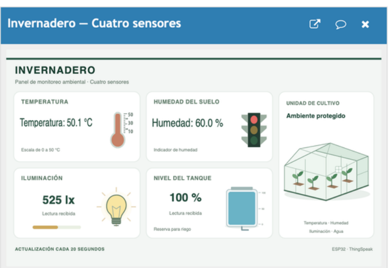
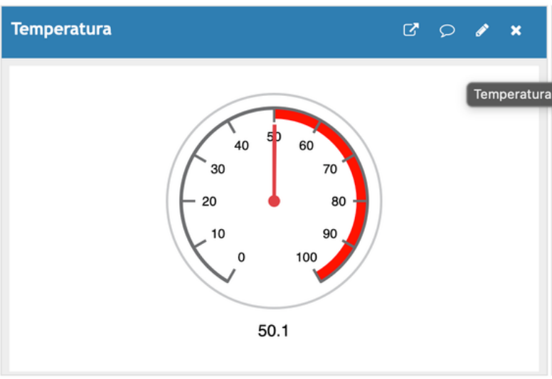
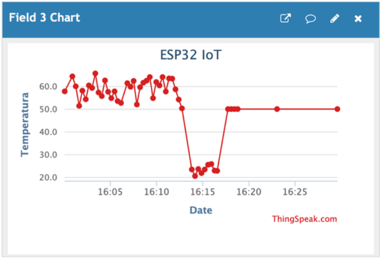
El ESP32 toma las decisiones y acciona el equipo incluso sin Internet. La nube recibe telemetría para supervisión, análisis y alertas.
Selecciona un componente para ver su función. Lee el flujo de telemetría de abajo hacia arriba.
Canal → React según condición · React o TimeControl → MATLAB Analysis → Google Apps Script
Protección de riego. Con nivel bajo, el ESP32 mantiene la bomba apagada aunque el suelo esté seco.
Vista completa. Verde indica control local, azul telemetría y ámbar alertas.
El ESP32 lee los sensores, aplica umbrales y protecciones, y acciona los relés o drivers. Si hay conexión, publica la telemetría en un ciclo independiente.
Se interrumpe la subida de lecturas. La nube puede seguir mostrando el último registro. La bomba, el ventilador y el LED UV siguen sujetos a las reglas locales.
Consulta las últimas mediciones desde la web, ThingSpeak o la app móvil.
El prototipo reúne la humedad del suelo, la temperatura, la iluminación y el estado del tanque. También muestra un historial de iluminación en lux.
En la arquitectura actual, la app es de solo lectura. El ESP32 conserva el control de la bomba, el ventilador y el LED UV durante un corte de Internet.
Configurar consulta web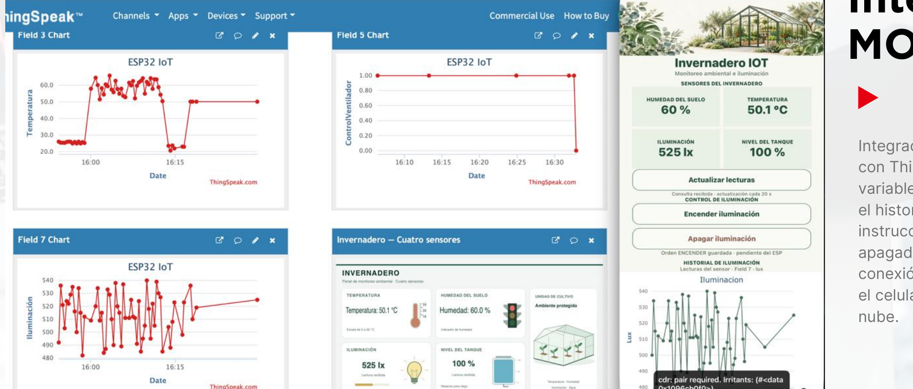
Capturas extraídas directamente del PDF del proyecto. Son imágenes históricas de la presentación, no mediciones en vivo.
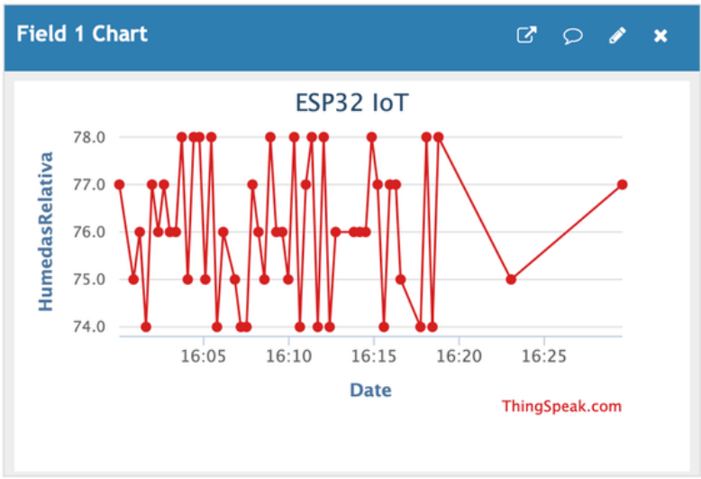
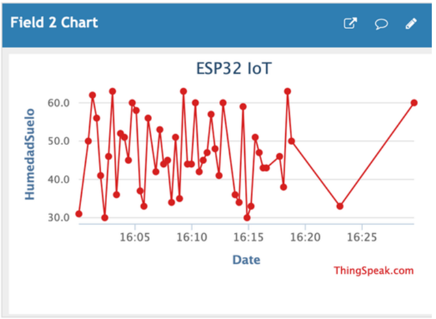
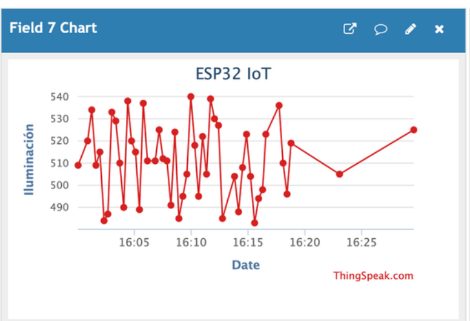
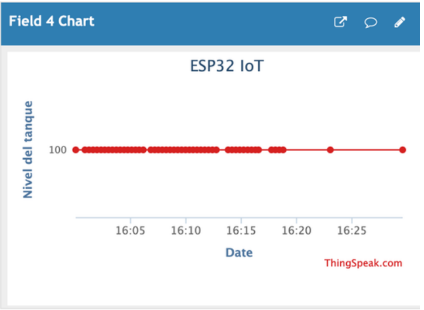
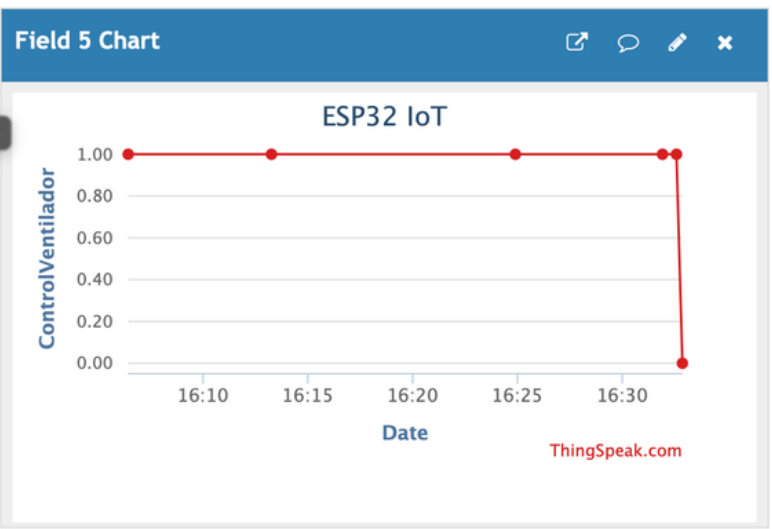
Vista general del sistema, evolución de la luz y aplicación móvil.
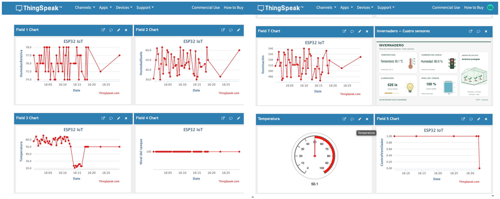
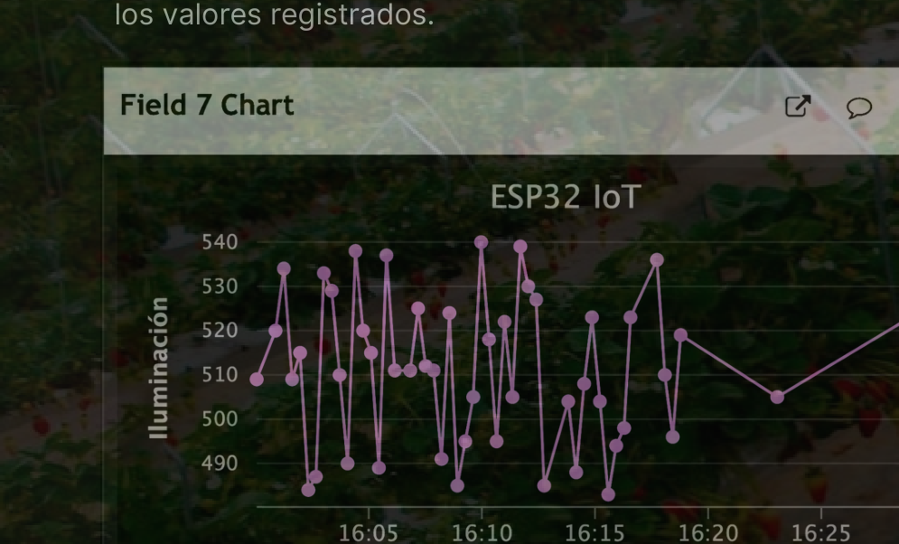
Instrumentos especificados en la presentación del invernadero inteligente.
SDA GPIO 21 · SCL GPIO 22
ADC GPIO 34, salida acondicionada a 3.3 V
DATA GPIO 4
Entrada GPIO 27 con pull-up apropiado
El ESP32 envía telemetría a ThingSpeak. La web consulta la API de lectura; MATLAB Analysis y React pueden evaluar condiciones para generar notificaciones.
https://api.thingspeak.com/updatehttps://api.thingspeak.com/channels/{ID}/feeds.json?results=20https://api.thingspeak.com/channels/{ID}/feeds/last.jsonSe recomienda una clave de escritura solo en el ESP32. Nunca publiques claves privadas de lectura ni claves de escritura en el HTML.
{
"field1": "61",
"field2": "48",
"field3": "27.4",
"field4": "1",
"field7": "420"
}Ejemplo de respuesta de lectura. Campos: humedad ambiental (1), suelo (2), temperatura (3), flotador (4) y lux (7). El flotador representa un estado discreto; esta web admite 0 para nivel bajo y 1 o 100 para nivel suficiente.
Consulta los últimos valores mediante HTTPS/JSON. Este panel es solo de lectura y no controla los actuadores.